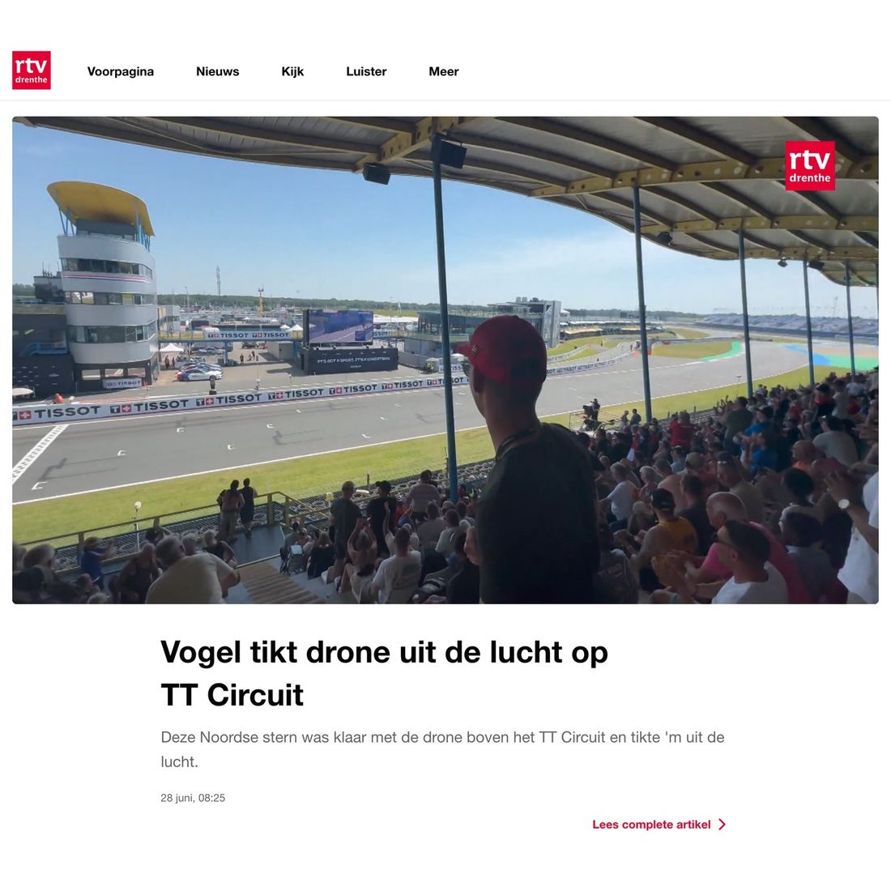
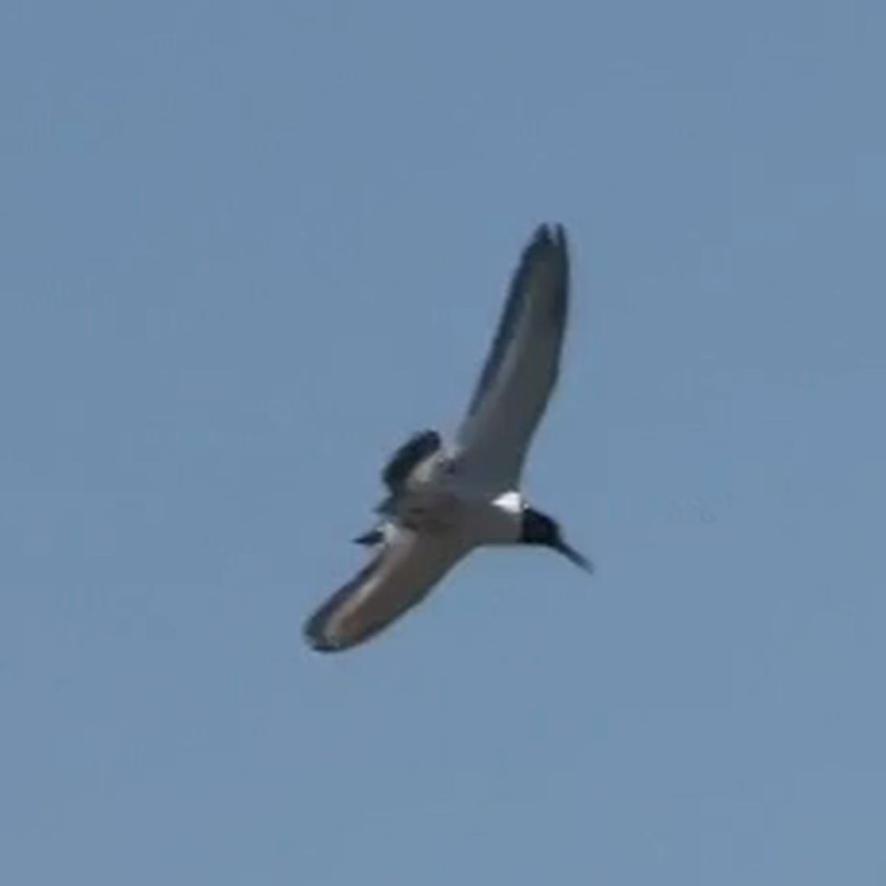

Scholekster, geen Noordse stern
- Op de foto
- Scholekster
- Het ging over
- Noordse stern


De vogel die boven het TT Circuit een drone uit de lucht tikte, was geen Noordse stern. Het was een scholekster, en die had daar waarschijnlijk een goede reden voor.
Kijk naar de snavel op de beelden: lang, recht en zwaar, veel langer dan de kop diep is. Dat is de scholekster, een zwart-witte stevige steltloper met een lange oranjerode snavel en roze poten, in vlucht met opvallende witte vleugelstrepen.
Een Noordse stern heeft een kort, fijn snaveltje, is van onderen grijzer, heeft doorschijnende handpennen en een staart die lánger is dan de vleugels. Niets daarvan zit op deze beelden. De Noordse stern broedt in Nederland bovendien vrijwel alleen in het Waddengebied.
De scholekster daarentegen broedt in natuurgebieden, boerenland én bebouwing, en steeds vaker op platte daken, waarbij hij foerageert op gazons en sportvelden. In 2023 zat naar schatting 15 procent van de binnenlandse paren op een dak. Een circuitterrein vol grinddaken en gras is dus geen rare plek. En een scholekster die eind juni luid alarmerend op iets af komt, heeft kuikens in de buurt. De drone was geen bezoeker, maar een indringer.
Volgende keer wat vaker naar de vogels kijken in plaats van naar de motoren, @rtvdrenthe!
Bron: Vogelbescherming Nederland en Sovon Vogelonderzoek Nederland.